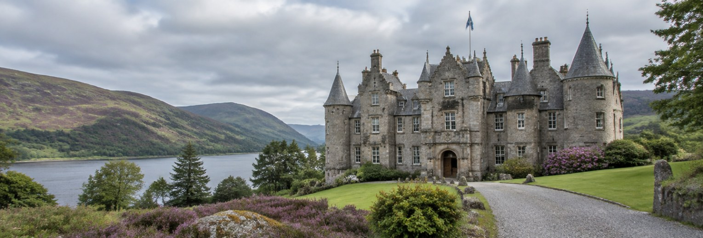

Anglais

Anglais · CAP, bac pro et CFA · Learning a Job and Keeping Going to School: Dual-Track Curriculum
Vingt dialogues en anglais, entre un professionnel et un client, pour le CAP, le bac professionnel et le CFA. Chaque vidéo a sa fiche élève et son corrigé, en pdf, docx et odt.
Voir le support
Anglais · Première bac pro / CFA · London: Global Metropolis
Sept lessons de 52 minutes sur Londres, ville-monde : géographie urbaine, services, transports, dialogues, discours indirect, email et pitch. Onglets pour le tableau numérique, réponses à afficher, version dys, fiches en pdf, docx et odt.
Voir le support
Anglais · Première bac pro / CFA · A Wedding in Scotland
Sept lessons de 52 minutes pour organiser un mariage en Écosse pour des invités français : lieu, budget, traditions, accueil, discours indirect, Keats. Onglets, réponses à afficher, version dys, fiches en pdf, docx et odt.
Voir le supportAnglais · Préparer aux examens en anglais
Les examens d’anglais réunis : brevet (DNB), CAP et CAPA, bac professionnel, lycée général et technologique (LVA, LVB, LLCER, AMC, Grand Oral), avec la spirale de Gorse.
Voir le supportAnglais / Français · CFA · Ressources CFA Production
Ressources pour apprentis en filière Production.
Voir le supportAnnonce FacebookAnglais · CAP / CFA · Kitchen and Everyday Life
Vocabulaire de la cuisine et du quotidien (CAP A2).
Voir le supportAnnonce Facebook
Anglais · CFA / BP · Green at Work
Séquence d’anglais pour la Seconde professionnelle, également utilisable en CFA et pour un brevet professionnel. Six leçons de 55 minutes, minutées sur 52 minutes. Un travailleur peut-il vraiment faire une différence pour la planète ? Étude de la langue, évaluations, version dys et version pour l’élève qui ne peut pas venir en classe.
Voir le supportJean-François Millet, The Gleaners (Des glaneuses), 1857, oil on canvas, Musée d'Orsay, Paris. Public domain.

Anglais · CFA / BP · Safe at Work
Séquence d’anglais pour la Seconde professionnelle, également utilisable en CFA et pour un brevet professionnel. Six leçons de 55 minutes, minutées sur 52 minutes. La sécurité au travail : à qui la tâche ? Étude de la langue, évaluations, version dys et version pour l’élève qui ne peut pas venir en classe.
Voir le supportLewis Hine, Icarus, Empire State Building, 1930, The Metropolitan Museum of Art, New York. CC0 (Open Access).
Lettres
Lettres · Préparer aux examens en français
Les ressources de français réunies par examen : brevet (DNB), CAP, bac professionnel, bac de français à l’écrit et à l’oral.
Voir le supportLettres · CAP / CFA · Lire, écrire, parler au travail
Français professionnel pour le CAP et le CFA.
Voir le supportAnnonce FacebookLettres · CFA · Préparer l'oral
Préparation de l'oral en français pour le CFA.
Voir le supportAnnonce Facebook